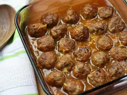

Maple Mustard Meatball

Description
These easy to make meatballs are baked in a sweet and tangy maple syrup and mustard sauce. Serve over rice, noodles, or mashed potatoes for a stress-free weekday meal. A great option for potlucks too!
Ingredients
- ½ pound ground pork
- ½ pound ground beef
- ½ cup rolled oats
- ½ cup milk
- 1 large egg, lightly beaten
- ¾ teaspoon saltz
- ½ teaspoon garlic powder
- ¾ teaspoon ground black pepper
- 1 tablespoon olive oil
- 1 small onion, diced
Steps
- Preheat the oven to 375 degrees F (190 degrees C).
- Combine ground pork, ground beef, oats, milk, egg, salt, garlic powder, and pepper in a large bowl. Shape into 24 meatballs, about 1 1/2 inches in diameter.
- Heat oil in a large skillet over medium heat. Cook meatballs until evenly browned, about 8 to 10 minutes. Place meatballs into an 8x8-inch casserole dish and scatter onion over top.
- Combine maple syrup, mustard, ketchup, hot pepper sauce, and salt for sauce in a medium bowl. Pour over meatballs and toss to coat.
- Bake in the preheated oven until set and cooked through, about 30 minutes, stirring halfway through.